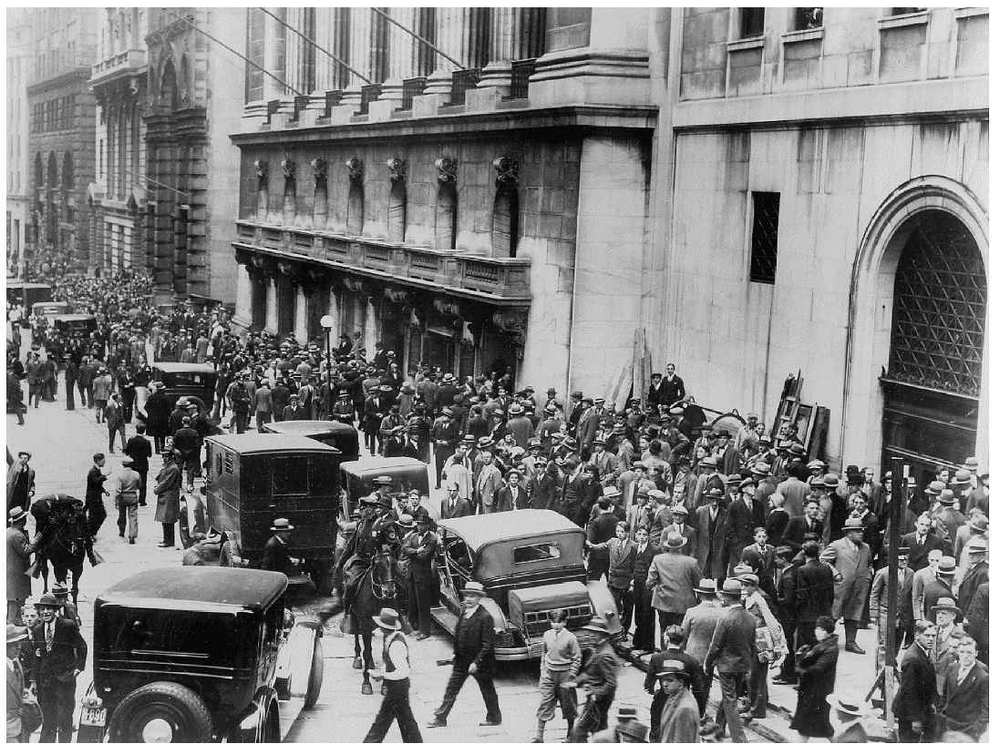
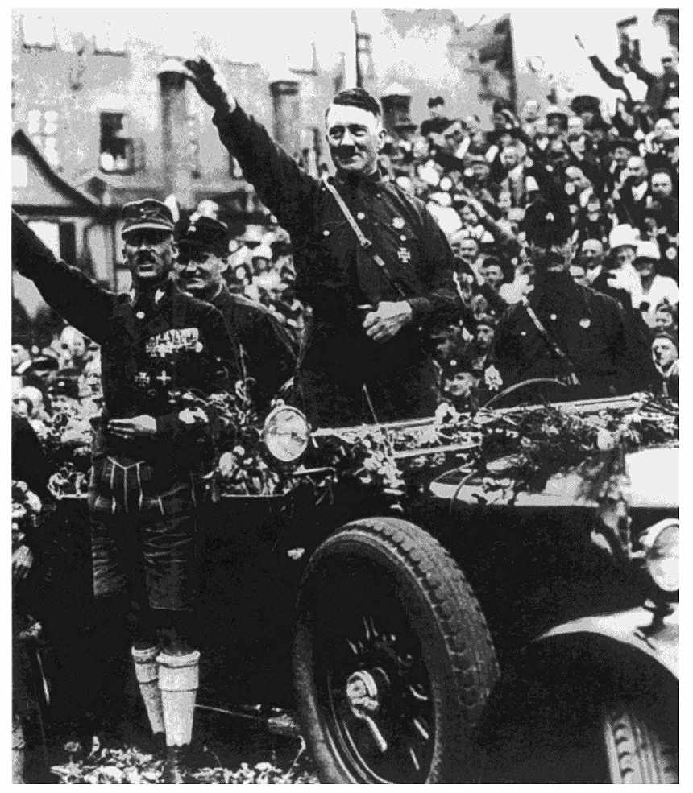
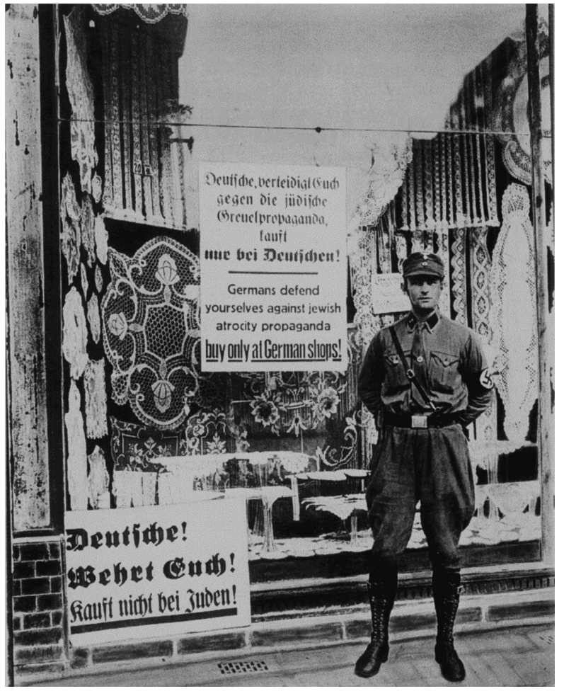

经济崩溃的根源
1929年初，美国似乎日趋繁荣。美国的工业生产指数在1921年时平均仅为67（1923年至1925年为100），但到1928年7月已上升到110，到1929年6月则上升到126。给人印象更为深刻的是美国股票市场的行情。在1929年夏季的三个月中，威斯汀豪斯公司的股票从151上升到286，通用电气公司的股票从268上升到391，美国钢铁公司的股票从165上升到258。实业家、学院经济学家和政府领导人都表示对未来充满信心。财政部长安德鲁·W.梅隆也于1929年9月向公众保证：“现在没有担心的理由。高企的景气将继续下去。”[4]

图267 1929年10月29日，人群聚集在纽约华尔街，当天的股市暴跌。美国的大萧条耗尽了美国原本可用于欧洲投资的资本。
然而这种自信却被证明是没有道理的；1929年秋，股票市场的价格跌到了最低点，世界范围的经济萧条随之而来，而且其强度和时长都是空前的。造成这一意外结局的一个原因似乎是严重的国际经济不平衡，这种不平衡是在（第一次世界大战之后）美国成为债权大国时发展起来的。英国在大战以前已是债权国，但它将来自海外投资和贷款的收入用来支付长期的入超。相反，美国则通常都是出超，而且出于国内政治原因使关税保持在高水平，这种出超也就被加大。此外，20世纪20年代，因不少国家支付战争债务，金钱源源不断地流入美国；美国的黄金贮藏量在1913年至1924年间从19.24亿美元增加到44.99亿美元，占世界黄金总贮藏量的一半。
有几年时间这种不平衡都因美国在国外的大规模贷款和投资而被抵消：1925年至1928年间，美国平均每年的对外投资总额达到11亿美元。当然，这种情况最终加强了不平衡，不可能无限持续下去。由于支付款到期，债务国不得不削减从美国的进口，美国某些经济部门，尤其是农业，也就受到了损害。此外，有些国家不得不拖欠债务，这就动摇了美国的某些金融公司。
美国经济的不平衡与国际经济的不平衡一样严重，其根本原因在于工资落后于不断上升的生产率。从1920年至1929年，工人每小时的工资只上升了2%，而工厂中工人的生产率却猛增了55%。同时，农民的实际收入也由于农产品价格的不断下跌、租税和生活费用的日益上升而正在减少。1910年，每个农场工人的收入不到非农场工人收入的40%，而到1930年时，这一比例已低于30%。农村的贫穷是一个严重的问题，因为当时农业人口占总人口的五分之一。
美国银行业体系的弱点是促成1929年股市崩溃的最后一个因素。当时，有许多独立的银行在经营，其中一些缺乏足够的财力来战胜金融风暴。因此，当一家银行倒闭时，恐慌传播开来，储户便会纷纷赶到其他银行去提取存款，从而也就引发了一个破坏整个银行业结构的连锁反应。
美国繁荣中的贫穷
就其强度、范围和持续的时间而言，大萧条是史无前例的。它对美国的影响可见于下面这段于1932年2月召开的国会委员会上所做的陈述。*
正如我（俄克拉何马城的奥斯卡·阿美林格）所说的，在最近三个月中，我访问了这个极其富裕、美丽的国家的约20个州。以下是我听到和看到的一些事情：在华盛顿州，我听说，整个夏季和秋季肆虐该地区的森林大火，是失业的林场工人和破产的农民故意引起的，他们想作为消防人员赚点实实在在的钱。离开西雅图的那个晚上，我看到的最后一件事是，许多妇女在大超市的弃货堆里找寻剩余食物。蒙大拿的一些市民告诉我，数千蒲式耳的小麦丢在田里无人收割，因为小麦的价格很低，几乎无法支付收割小麦的费用。在俄勒冈，我看到几千蒲式耳的苹果烂在果园里。只有绝对无瑕疵的苹果才能卖得出去，一箱苹果200个，卖40美分到50美分。与此同时，今冬数以百万计的孩子却因父母的贫困而吃不到一个苹果。
当我在俄勒冈时，波特兰的俄勒冈人为这一事实感到惋惜：数以千计的羊羔被牧羊人杀了，因为羊在市场上卖的钱还不够支付运输它们的费用。俄勒冈的牧羊人将羊肉喂了鹌鹑，而我却在纽约和芝加哥等城市里看到人们在丢弃的罐头听里找剩肉。我把这件事告诉了芝加哥餐馆的一个人。他给我讲了他养羊的经验。他说他今年秋天杀了3000只羊，把它们抛到了峡谷里，因为用船运一只羊要1.1美元，而他卖一只羊当时还得不到1美元。他说，他已养不起这些羊了，又不能让它们挨饿，所以只好将它们杀了抛进峡谷里。
西部和西南部的路上挤满了饥饿的搭便车者。每一条铁路线旁都能见到无家可归者燃起的营地篝火。我看到男人、女人和孩子们在坚硬的路上行走。他们中的绝大多数都是在最近的这次麦子和棉花大跌价中变得一无所有的佃农。在阿肯色州的克拉克斯维尔和拉塞尔维尔之间，我让一家人搭了车。那家妇女在破旧的外衣下紧抱着一只死鸡。当我问她从哪儿得到这只鸡时，她先告诉我，她发现这只鸡死在路上，接着又用冷幽默补充道：“他们承诺我的锅里会有一只鸡，现在我得到了我的那只……”
农民因工业人口的贫困而变得贫困，工业人口也因农民的贫困而贫困。他们都没有钱去购买对方的产品，因而我们才会在同一个国家的同一个时期出现生产过剩和消费不足这种情况。
* Unemployment in the United States... Hearings before a subcommittee of the Committee on Labor, House of Representatives，72nd Congress，1st Session（Government Printing Office，1932）, pp. 98-99.
世界范围的大萧条
美国股票市场的崩溃始于1929年9月。一个月内，股票的价值下降了40%，而且，除了少数几次短暂回升外，下跌持续了三年。在此期间，美国钢铁公司的股票从262下降到22，通用汽车公司的股票从73下降到8。到1933年，工业总产量和国民收入暴跌了将近一半，商品批发价格下跌了近三分之一，商品贸易下降了三分之二以上。
大萧条的独特性不仅在于它的烈度，还在于它的世界性影响。美国金融公司不得不收回它们在国外的短期贷款；毫无疑问，这造成了种种后果。1931年9月，英国放弃了金本位制，两年后，美国和几乎所有大国也都这样做了。工业和商业的崩溃与金融世界的崩溃极为相似：不包括苏联的世界工业生产指数从1929年的100下降到1930年的86.5、1931年的74.8和1932年的63.8，下降了36.2%。在前几次危机中，最大的下降幅度是7%。国际贸易的衰退更为急剧，从1929年的686亿美元下降到1930年的556亿美元、1931年的397亿美元、1932年的269亿美元和1933年的242亿美元。这里还应该指出，在过去，国际贸易的最大下降幅度是7%，出现在1907年至1908年的危机中。
社会和政治后果
这些经济大灾难引发了同样严重的社会问题。其中最严重的是大规模的失业，已达到了悲惨的程度。1933年3月，美国的失业人数据保守的估计为1400多万，相当于全部劳动力的四分之一。在英国，失业人数将近300万，在全部劳动力中所占的比例与美国大致相同。德国的情况最糟，工会成员中有五分之二以上的人失业，另外还有五分之一的人只有非专职工作。
如此大规模的失业大大降低了各国的生活水平。即便是富裕的美国，也广泛地存在着苦难和贫穷，尤其是在早期阶段，当时受托负责救济的是一些资金不足的私人机构和地方机构。在德国，由于失业者所占的比例较高，挫败感和冲突感更为强烈。最终，这些因素使希特勒获胜成为可能，因为如此大规模的社会混乱必然会产生深刻的政治后果。
阿道夫·希特勒是奥地利一位海关小官员的儿子，早年曾去维也纳，渴望成为一名画家。他靠从事各种最卑贱的工作来糊口，过了5年悲惨的生活——这是据他自己说的，似乎言过其实了。希特勒从维也纳流浪到慕尼黑，在那里，他于1914年进入巴伐利亚军团服役。战争结束后，希特勒加入德国国家社会主义工人党这一战斗组织，不久便成为该党的领袖，即元首。在发表了一系列有关民族主义和反闪族的煽动性演说之后，他和陆军元帅鲁登道夫一起参加了1923年在慕尼黑举行的一场暴动。这场暴动被警察轻易镇压下去，希特勒被关押了9个月。当时，他35岁，在狱中写下了《我的奋斗》——一部夸张的长篇自传体回忆录，在其中，他发泄了对民主政体、马克思主义和犹太人的仇恨。

图268 在1927年纽伦堡的一次纳粹党集会上，阿道夫·希特勒停下他的敞篷车，接受周围人群的欢呼。20世纪20年代后期的纳粹运动只是带给魏玛共和国纷争的众多问题之一。
获释后，希特勒继续从事鼓动工作，结果却令人失望。在1924年12月的选举中，他的纳粹党仅获得14个席位和90.8万张选票；在1928年5月的选举中获得的席位和票数则更少——12席和81万张选票，占总票数的2.6%。1930年9月的选举是一大转折，当时纳粹党获得了107席和640.7万张选票，占总票数的18.3%。希特勒获得支持的方法是许诺打破失业问题和《凡尔赛和约》的束缚，以及攻击犹太人是从事剥削的资本家和信奉唯物论的共产主义者。希特勒在之前几年里一直在为这一政纲奔走游说，但反响却极小。但是现在，大萧条为他赢得了狂热的听众，拥戴他为元首，因为他为他们的不幸找到了替罪羊，为个人和国家愿望的实现提供了行动纲领。此后，希特勒平步青云。在1932年7月举行的选举中，他赢得了1379.9万张选票和230席。1933年1月30日，希特勒成为内阁总理，开始像墨索里尼一样用宣传和恐怖统治德国。

图269 掌权后不久，纳粹政府便开始骚扰德国犹太人的生意，要求非犹太裔的德国公民不要从犹太人的商店中购买商品。
大萧条使希特勒的胜利成为可能，不过，这绝不是不可避免的。这种可能性转变为现实是由于其他因素的结合，其中包括希特勒本人的煽动才能、各种既得利益集团提供的援助和对手们的短视——他们低估了希特勒，未能联合起来反对他。1934年8月2日，兴登堡去世，正好使希特勒能把总统和总理的职权收归他一人掌握。第二个月，纳粹党代表大会在纽伦堡召开，希特勒宣布：“德国今后一千年的生活方式已被清楚地确定。”
国际后果
英国外交大臣奥斯汀·张伯伦爵士在将1932年的国际形势与洛迦诺时代的国际形势进行比较后说道：
出于某种原因，由于某种难以确切指出的东西，世界近两年正在倒退。各国相互之间非但没有更加接近，非但没有增进友好的程度，非但没有在向稳定的和平迈进，反而还采取了危及世界和平的猜疑、恐惧和危险的态度。[5]
张伯伦所不能确定的“某种东西”就是大萧条及其各种国际和国内影响。洛迦诺时代的各种国际协定，尤其是关于赔款和战争债务的国际协定，已无法实行。不久事情就变得很明显，各国政府由于被不断衰退的经济和日益严重的失业推到崩溃的边缘，已不能履行几年前所作的承诺。
大萧条的另一个影响是使始终存在的经济民族主义发展到妨害国际关系的程度。各国的自卫措施都采取了诸如较高的关税、更严格的进口限额、结算协定、货币管制条例和双边贸易协定之类的形式。这些措施必然会引起各国间的经济摩擦和政治上的紧张关系。为了转变这一趋势，人们做了各种尝试，但都没有成功。1933年在伦敦召开的世界经济会议就是一次使人沮丧的大失败。“经济独立”即经济上的自给自足逐渐成为一个被普遍采纳的民族目标。
与此密切相关的是，为裁军所作的种种尝试逐渐停止，让位于各种大规模的重整军备计划。始于1932年2月的裁军会议断断续续地开了20个月，但却与经济会议一样没有取得任何成效。随着20世纪30年代的渐渐逝去，各国都将越来越多的力量用于重整军备。这一趋势是不可能停止的，因为军火制造不仅提供了想象中的安全，还提供了就业机会。例如，美国的失业人数直到它在第二次世界大战前夕开始重整军备时才大大减少。同样，希特勒也是因为实行了庞大的重整军备计划，才得以迅速解决他所面临的前所未有的失业问题。
这时正在积聚起来的武器装备迟早会得到使用，但使用它们还需要某种理由。“生存空间”便是最明显的理由。这是希特勒新创的术语，意大利的墨索里尼和日本的军事领导人也使用了类似的说法和论点。按照这一学说，失业和普遍存在的苦难是由生存空间的缺乏引起的。少数几个幸运的国家夺取了所有的殖民地和人烟稀少的海外领土，使其他国家没有维持其人民的生存所必需的自然资源。解决这一问题最明显的出路就是扩张，必要时也可使用武力，以纠正过去所遭受的不公正。这就是所谓的“后发”国反对“先发”国时所使用的论点。
大萧条不仅破坏了德国、意大利和日本，还以同样的程度不偏不倚地破坏了美国、加拿大和英国——由这一事实看来，上述论断显然是不正确的。不过，生存空间的意识形态的确促使“后发”国人民团结起来，支持各自政府的扩张主义政策。并且它还为那种公开宣称其目的是为穷人提供食物、为失业者提供工作的侵略提供了表面上看来合乎道义的理由。
引起张伯伦于1932年所说的“猜疑”“恐惧”和“倒退”的各种力量就这样结合起来。在随后几年中，这些力量完全破坏了已于20世纪20年代达成的和解，促成了一个又一个危机，最终导致了第二次世界大战。
[推荐读物]
R. Munting所著的The Economic Development of the USSR（St. Martin’s出版社，1982）是对五年计划的来龙去脉一个很好的简明的概括。重新评价新经济政策和五年计划的著作有：S. Cohen所著的Rethinking the Soviet System（Oxford University出版社，1985）；M. Lewin所著的The Making of the Soviet System（Pantheon出版社，1985）；C. Bettelheim所著的Class Struggles in the USSR，2 vols.（Monthly Review出版社，1976，1978）和S. Brucan所著的The Post-Brezhnev Era：An Insider’s View（Praeger出版社，1983）。分析五年计划的全球影响的著作有： E. H. Carr所著的The Soviet Impact on the Western World（Macmillan出版社，1954）；C. K. Wilber所著的The Soviet Model and Underdeveloped Countries（University of North Carolina出版社，1970）和R. Pipes所著的Communism：The Vanished Spectre（Oxford University出版社，1994）。
分析大萧条的著作有：J. K. Galbraith所著的The Great Crash，1929（Houghton Mifflin出版社，1955）；G. Rees所著的The Great Slump：Capitalism in Crisis（Harper & Row，1971）；C. P. Kindleberger所著的The World in Depression，1929-1939（University of California出版社，1975）和J. A. Garrity所著的The Great Depression（Harcourt Brace Jovanovich出版社，1986）。关于希特勒的上台，W. L. Shirer所著的The Rise and Fall of the Third Reich（Simon & Schuster出版社，1960）作了勇敢的叙述；而有分量的传记作品有A. Bullock所著的Hitler：A Study in Tyranny（Harper & Row出版社，1952）和J. Toland所著的Adolf Hitler（Doubleday出版社，1976）。关于希特勒上台的环境，R. F. Hamilton所著的Who Voted for Hitler?（Princeton University出版社，1982），H. A. Turner，Jr.所著的German Big Business and the Rise of Hitler（Oxford University出版社，1985）和D. Abraham所著的The Collapse of the Weimar Republic：Political Economy and Crisis（Princeton University出版社，1981）提出了不同的观点。
[注释]
[1]Cited by S. and B. Webb, Soviet Communism：A New Civilization, Vol. 2（Gollanez，1937）, p. 605.
[2]Cited by S. F. Cohen, Rethinking the Soviet Experience（Oxford University，1985）, p. 77.
[3]M. Lewin, Russian Peasants and Soviet Power（W.W.Norton，1968）, p. 517.
[4]H. E. Salisbury, New York Times, September 29，1953.
[5]Cited by J. K. Galbraith, The Great Crash，1929（Houghton Mifflin，1955）, pp. 20，75.